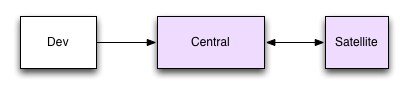
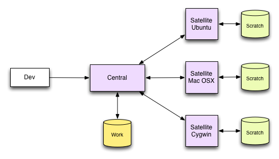

Flod is an open source, distributed, continuous integration system. It employs agents to perform build, test and other functions. It is very low friction, and nearly invisible. Flod is designed to augment single- or multi-platform software projects by providing a framework that automatically builds and tests projects without any intervention beyond a single command to set up the system.
Flod provides a means for small to medium software projects to enjoy the benefits of continuous integration and multi-platform testing without necessarily having dedicated hardware or resources. It is designed around the fact that projects may not have continuous access to hardware and may perform testing on virtual machines which are not always running. This is the reality of modern systems.
One important aspect of flod is that it supports the notion of a community of volunteers that can donate cpu time for their chosen platform. This allows more people to contribute to a project, providing valuable diagnostics, without the need to be able to patch the source code. Flod makes every effort to allow this kind of use, which includes restrictions on which projects are supported, and limiting activity.
The name 'flod' means many things: river, flow, flood. This refers to the streams of information that flow into the software.
There are three parts to consider, and each has a special role. There is the central node that is a server which coordinates the testing effort and aggregates results. There is a dev node that provides information about code changes to central. Lastly there is the satellite node that does the building and testing. Here is an overview of this arrangement:
The diagram shows that all nodes need access to the central node. The diagram is also for a simple project that involves only a single platform, and therefore one satellite. Even so, this is a very useful setup. A more typical example includes multiple satellites, building and testing on each.
This represents three satellites, each with its own scratch space. Central has a work area that stores permanent results and the work queue.
When a code change is made and committed to the SCM system, a hook is triggered that makes a call to flod that looks like this:
flod build --branch v1.2.3 \
--commit a0443eacbcbfb133123a9776d6b \
--author Alice \
--timestamp 1234567890
This command communicates with central and provides all the information necessary for a satellite to build and test the project. Central records the information. This all happens very quickly, and the code committer will not notice any delay. The committer then continues to work, unimpeded by flod.
Next, the three satellites will ask central if there is any work to be done. In doing this, the satellites provide information about the environment on the satellite machine, such as compiler version, POSIX compliance, size of a C 'int' type and so on. The satellites have a delay between asking central for work, which defaults to once a minute.
Central will process these work requests by consulting the work queue and matching the work against the satellite. If a match is found, the work details are sent back to the satellites.
Once the satellite receives the work, the project is copied, built and tested, then the result logs are submitted to central for storage and analysis.
Central has hooks that can be used to (re)generate various reports on receipt of data from satellites. The hooks can trigger other programs that, for example, create dev snapshot tarballs, check for clean builds and clean test runs and so on.
You can donate testing resources to a project, by running a satellite node only. This means that your installation would connect to a remote central node and perform builds at its request. This is a valuable way to contribute to a project and Flod provides you with a feature to allow you to control and limit involvement.
See setting up a test donor for details on how to do this.
You can also host your own continuous integration system, which means you will run a central node, a dev node, and one or more satellite nodes.
See setting up a full Flod system for details on how to do this.